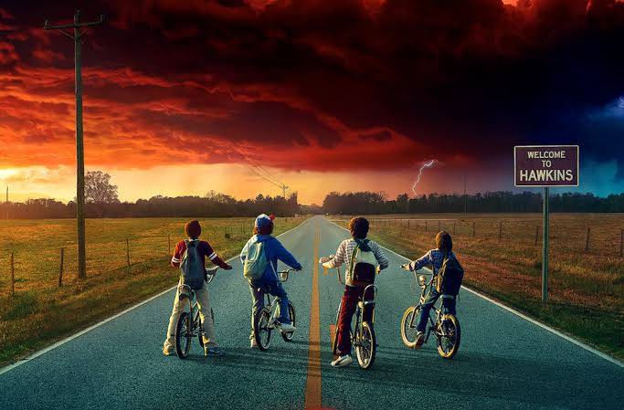
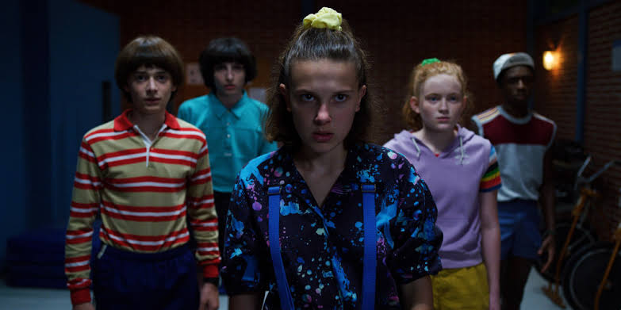
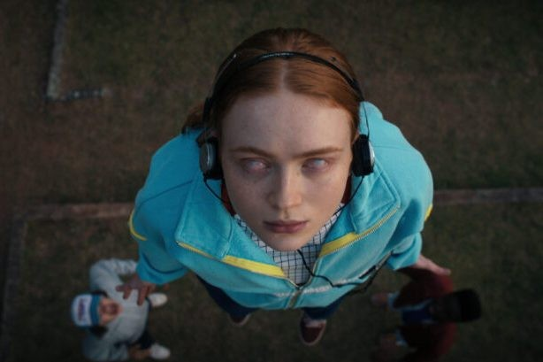

One town. A group of friends. A mystery that changes everything.
Welcome to Hawkins, Indiana

Imagine riding your bike home after sunset, your favourite song playing in your headphones, when suddenly your best friend disappears without a trace. The police have no answers. His family refuses to give up. And then, a strange girl with a shaved head, a mysterious past, and extraordinary powers walks into your life.
Sounds like the beginning of a crazy story, right? Welcome to Stranger Things.
Set in the 1980s, this hit Netflix series begins with the disappearance of Will Byers in the seemingly ordinary town of Hawkins. But as his friends search for him, they uncover secrets that should never have existed, a government laboratory hiding something sinister, and a terrifying world lurking just beyond their own.
And that's only the beginning.
Meet Eleven, Mike, Dustin, Lucas, Will, and the rest of the gang as they face monsters, solve impossible mysteries, and discover that growing up is already hard enough without another dimension trying to destroy your hometown.
But here's what makes Stranger Things special: beneath the creepy creatures, shocking discoveries, and heart-pounding suspense is a story about friendship, loyalty, courage, and finding your people - even when the whole world thinks you're a little strange.
Whether you're a longtime fan or someone wondering what all the hype is about, Hawkins has a way of pulling you in. One episode becomes two. Two become five. And before you know it, you're emotionally attached to a group of fictional people who somehow feel like your own friends.
So, are you ready to find out what makes this town so unforgettable?
Grab your walkie-talkie. Gather your party. And whatever you do, don't stop watching when things get strange.
More Than Just a Mystery
Friendship, adventure, science fiction, horror, and the chaos of growing up

Monsters? Absolutely. Secret experiments? Definitely. Friendships that make you laugh, cry, and occasionally question your emotional stability? Oh, yes.
Stranger Things brings together science fiction, horror, adventure, comedy, and the chaos of growing up. It takes you from ordinary school days to extraordinary battles, with unforgettable characters and unexpected twists along the way.
And somehow, in a town where almost nothing makes sense, friendship becomes the one thing worth fighting for.
Enter the Unknown
There is more to Hawkins than meets the eye. Beneath its quiet streets and familiar neighbourhoods lies a dark, dangerous dimension known as the Upside Down - a place where the familiar becomes frightening and the rules of the ordinary world no longer apply.
What is it? How is it connected to Hawkins? And what happens when the boundary between the two worlds begins to break?
Well, we wouldn't want to spoil all the fun, would we?
Keep exploring, and remember: sometimes the scariest secrets are hiding right beneath your feet.
Turn Up the Volume

Some songs are just songs. Others become part of a moment you will never forget
From nostalgic 1980s classics to haunting electronic sounds, the music of Stranger Things does more than fill the silence. It builds suspense, brings characters closer, and turns certain scenes into moments that stay with you long after the credits roll.
Whether you're revisiting a favourite scene or discovering the soundtrack for the first time, it's time to turn up the volume and let Hawkins take over.
Press play. The adventure sounds better with music. Even the characters in the show knew that. Music is therapy!